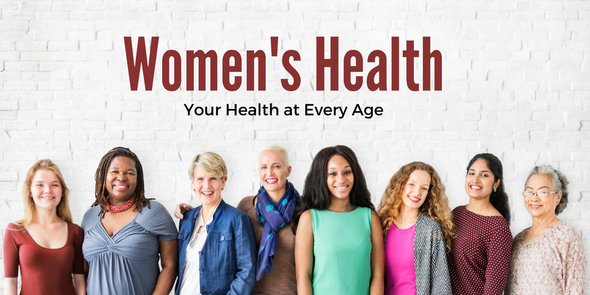
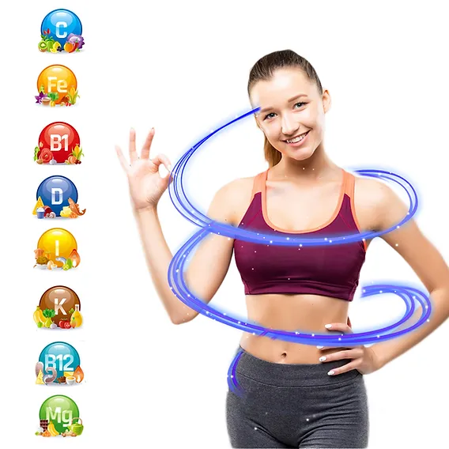
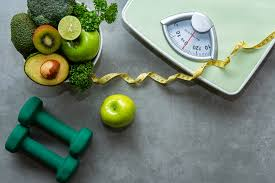

Healthy Eating For Weight Loss
A healthy diet is essential for maintaining or losing weight and should consist of a balanced intake of nutrients, including proteins (from sources like fish, poultry, eggs, dairy, nuts, and legumes), healthy fats (such as monounsaturated fats from olive oil and avocados, polyunsaturated fats from fish and nuts, and limited saturated fats from dairy and meats), and carbohydrates (primarily from whole grains, fruits, vegetables, and legumes while avoiding refined sugars and processed carbs). It's important to include a variety of vitamins and minerals—such as vitamins A, B, C, D, E, and K, as well as calcium, potassium, and iron—which can be obtained through a diverse diet. Adequate hydration is also crucial, with water comprising about 55%-65% of body weight, found in beverages and water-rich foods like fruits and vegetables. Following MyPlate guidelines can help visualize a balanced plate, where half consists of fruits and vegetables and the other half is divided between whole grains and lean proteins. To effectively manage weight, it’s vital to stay within your calorie “budget” while focusing on nutrient-dense foods and consulting a dietitian for personalized advice based on individual needs. It sounds counterintuitive, but many people find success losing weight—especially initially—by eating more fat, not less. Called a ketogenic or Keto diet, this method requires shifting the main source of calories over to fatty foods—between 75% and 90% of what you eat, with only 10-20% of your calories coming from protein and a mere 5% from carbohydrates. The theory is that by eating so many healthy fats and restricting carbohydrates, you enter an altered metabolic state in which you force your body to begin relying on fat for energy, burning away your fat stores instead of sugar for fuel. Research does show that keto is an effective way to jump-start weight loss and improve blood-sugar levels. However, it is hard to maintain, and to date we are lacking long-term studies that show it to be a sustainable eating pattern for keeping weight off.
Vitamins Women Need

It's a message you've probably heard before: Keep yourself healthy with the right mix of vitamins. But which ones, you wonder, and should I pop pills or get the nutrients through the food I eat?
Vitamins and their precise requirements have been controversial since their discovery in the late 1800s and early 1900s. It was the combined efforts of epidemiologists, physicians, chemists, and physiologists that led to our modern day understanding of vitamins and minerals. After years of observation, experiments, and trial and error, they were able to distinguish that some diseases were not caused by infections or toxins—a common belief at the time—but by vitamin deficiencies. [2] Chemists worked to identify a vitamin’s chemical structure so it could be replicated. Soon after, researchers determined specific amounts of vitamins needed to avoid diseases of deficiency. In 1912, biochemist Casimir Funk was the first to coin the term “vitamin” in a research publication that was accepted by the medical community, derived from “vita” meaning life, and “amine” referring to a nitrogenous substance essential for life. [3] Funk is considered the father of vitamin therapy, as he identified nutritional components that were missing in diseases of deficiency like scurvy (too little vitamin C), beri-beri (too little vitamin B1), pellagra (too little vitamin B3), and rickets (too little vitamin D). The discovery of all vitamins occurred by 1948. Vitamins were obtained only from food until the 1930s when commercially made supplements of certain vitamins became available. The U.S government also began fortifying foods with specific nutrients to prevent deficiencies common at the time, such as adding iodine to salt to prevent goiter, and adding folic acid to grain products to reduce birth defects during pregnancy. In the 1950s, most vitamins and multivitamins were available for sale to the general public to prevent deficiencies, some receiving a good amount of marketing in popular magazines such as promoting cod liver oil containing vitamin D as bottled sunshine. (Source: https://nutritionsource.hsph.harvard.edu/vitamins/)
The best thing to do is to keep up a balanced diet. But supplements can be a good way to fill in the gaps when they happen.
Following is the table of essential vitamins and their sources:
| Vitamin | Alternate Name | Functions | Food Sources | Adiitional Information |
|---|---|---|---|---|
| Vitamin C | Ascorbic acid | Aids in wound healing, helps make red blood cells, boosts norepinephrine levels (alertness and concentration) | Broccoli, grapefruit, kiwi, oranges, peppers, potatoes, strawberries, tomatoes | Levels decrease with stress and aging. |
| Vitamin E | Tocopherol, tocotrienols | Keeps cells healthy, may slow aging, risk of bleeding with excessive intake | Corn oil, cod-liver oil, hazelnuts, peanut butter, safflower oil, sunflower seeds, wheat germ | Excessive intake can increase bleeding risk. |
| Vitamin B6 | Pyridoxine | Maintains brain function, aids in metabolism (food to energy conversion) | Fish, potatoes, chickpeas, avocadoes, bananas, beans, cereal, meats, oatmeal, poultry | Can be toxic in large amounts, better to get from food sources. |
| Vitamin D | Cholecalciferol, ergocalciferol | Works as a hormone, helps calcium and phosphorus absorption for bone health | Eggs, fish (salmon, mackerel, sardines), fortified foods | Middle-aged and older adults may need supplements or fortified foods to meet needs. |
| Vitamin K | Phylloquinone, menaquinones | Helps with blood clotting and bone health | Green leafy vegetables, soybean oil, broccoli, alfalfa, cooked spinach, fish oil | Important for older adults to prevent conditions like osteoporosis. |
Get Fit Advice For Women Over 50
Many difficulties of aging are linked to an inactive lifestyle. And while your chronological age may be 55, your biological age can be 35 -- if you follow a consistent exercise program. Before you start, check with your doctor, especially if you have any of the risk factors for heart disease (smoking, high blood pressure, high cholesterol, diabetes, or family history). Then, get moving. A complete fitness program must include the following:
- Aerobic Exercise:Try walking, jogging, swimming, or dancing. These exercises improve your heart health and help control weight. Aim for 20 minutes per session, 3-4 times a week. Use the “talk test” — you should be able to talk comfortably while exercising.
- Strength Training:Lifting weights improves strength, posture, and bone health. Start with 8 reps and gradually work up to 12.
- Stretching:Stretching improves flexibility and joint range of motion, reducing injury risk and muscle soreness.
How To Maintain Weight Loss:5 Tips

Good for you: You’ve achieved your desired weight. Next up? Keeping it off. Yes, you can! Have a positive attitude. The changes you made can stick. Use these five tips to help you stay on track:
- Don’t skip meals. Skipping meals can slow your metabolism down. Skipping meals can also cause overeating later in the day.
- Weigh yourself daily. A daily weigh-in may seem like overkill, but research shows the method is more effective than getting on the scales less frequently.
- Keep a health journal. To ensure you’re sticking to your healthy goals, write down everything you eat or drink. Be honest and accurate; otherwise, the journal is not as helpful. The journal will help you see when you’re reaching for higher-calorie foods, so you can make adjustments. You can also record when you exercise (and how long). Notice any trends -- for example, if you’re gaining weight because you’re eating the same but stopped exercising.
- Stay committed to a healthy diet. Eat a variety of foods to get all the nutrients you need. Include choices from whole grains, fruits, vegetables, and lean protein sources.
- Be active. Now’s not the time to cut back on your workouts. You still want to exercise most days of the week. Physical activity is one of the most important aspects of keeping weight off, so make sure you’re building it into your daily routine.
At the end of the day, your health is your responsibility. – Jillian Michaels